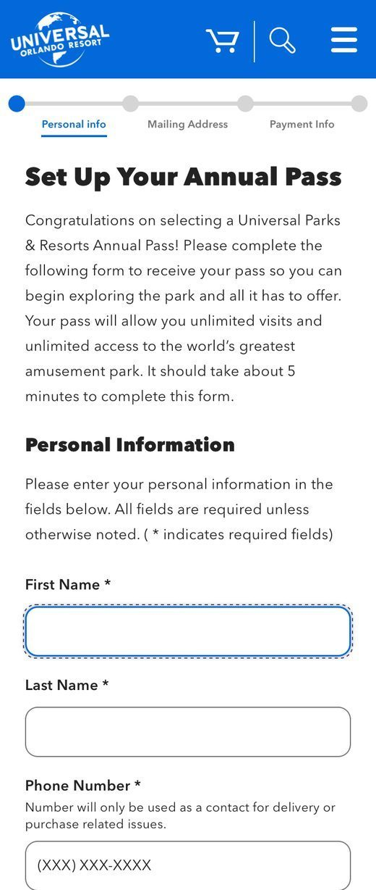
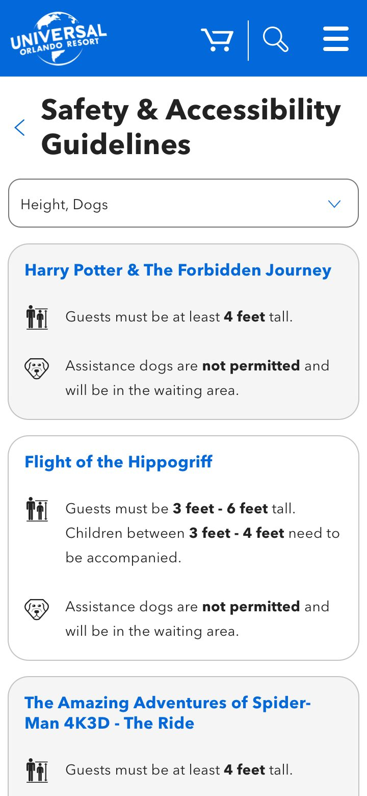
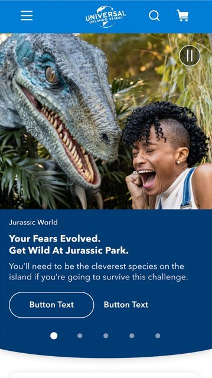
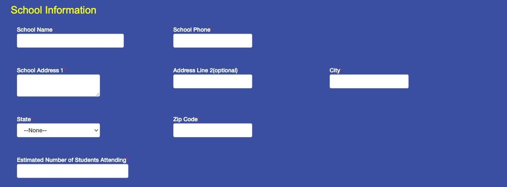
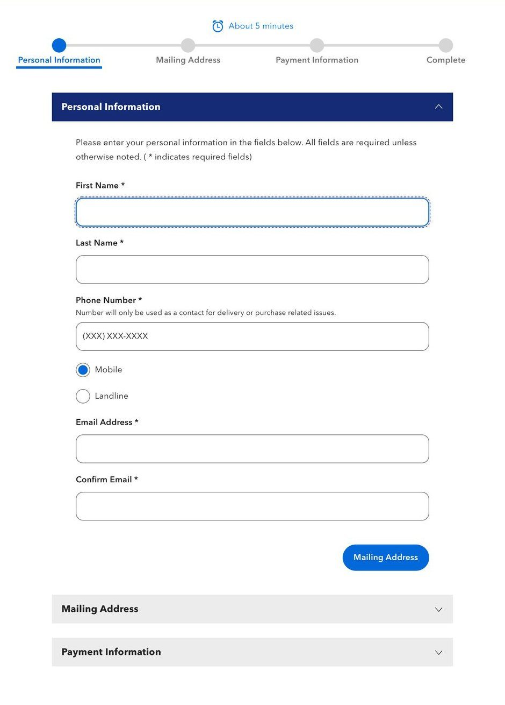
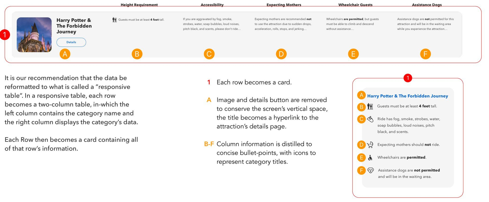
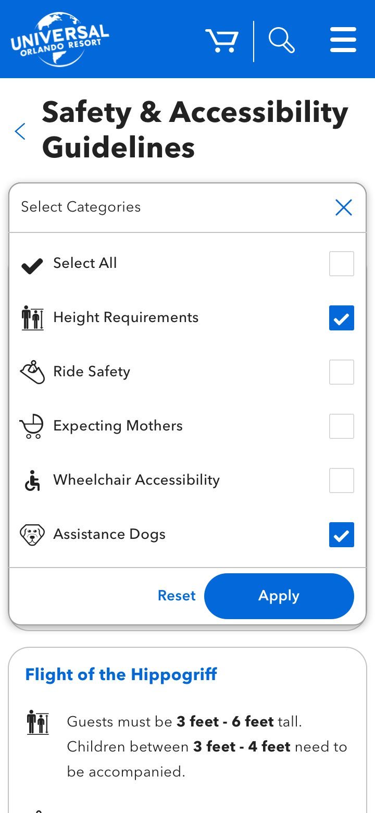
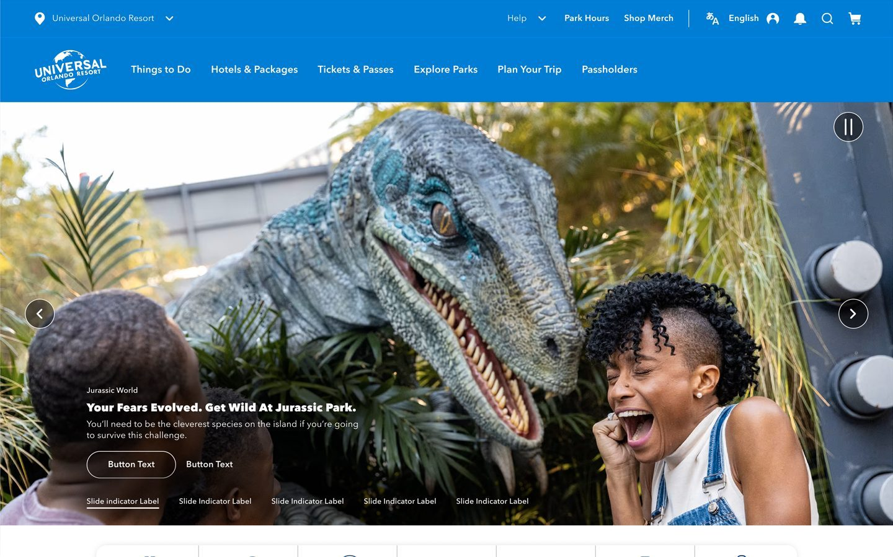
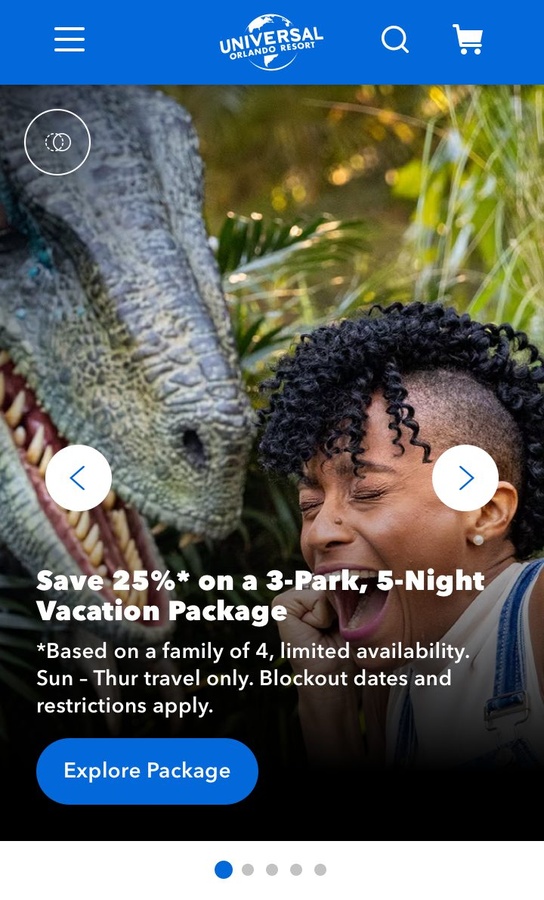
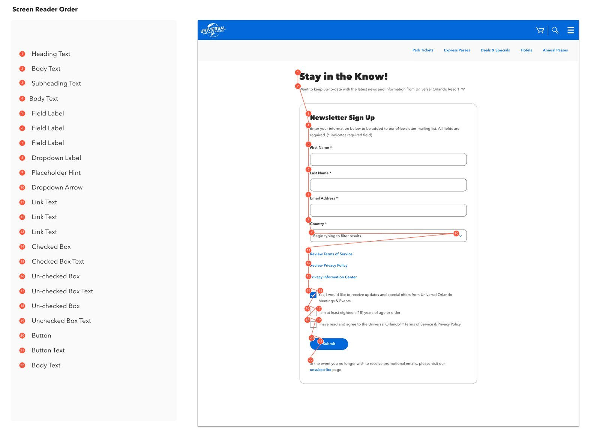

Case study · Universal Orlando
Let the device decide.
Input forms, charts and the homepage hero carousel for Universal Orlando’s design system. I was the only designer on all three. Each one went to users before it went to developers, and each one takes the shape its screen calls for. All three are live.



Input forms
Fewer inputs, fewer errors.
Universal Orlando’s guests use forms to sign up for the newsletter, apply to youth programs, order group tickets and enroll their children. Seven live forms shared no rules, with multi-column layouts, contrast failures and zip fields that accepted letters.
It is possible to validate an address with only the street address and zip code. This reduces the number of inputs on a form and protects against user errors when entering city and state information.

Type a zip code (try 77006).
One annual pass form went to a usability test three ways: single page, multi-page and accordion. On phones, 4 of 7 users ranked the accordion lowest, so phones get a single page and desktops get the accordion. Neither device picked multi-page, and the library does not include it.

Charts
Each row becomes a card.
A guest, such as an expectant mother, wants to see quickly which rides she cannot ride safely. Universal’s ride-rules table cannot fit a phone without scrolling both ways, and sideways scrolling fights the phone’s own gestures.
So each row becomes a card. Every column becomes one short line with an icon for its category, the cards stack so the chart reads with vertical scrolling only, and a dropdown filters every card to the categories a guest picks.

In an unmoderated test, all 8 testers completed all 7 tasks. How they did it changed the design: half reset the list by ticking each unchecked box, and nobody had a Select All to reach for.
“There should have been an all button to select.”

Hero carousel
Slow enough to read.
The hero carousel sits directly below the header and carries the promotions marketing picks: free ticket days, vacation packages, Mardi Gras. Each Universal property ran its own version, with no rules for autoplay or auto-advance. Two rounds of testing set them.

Pause and play
Testers needed the reduce-motion button to be more recognizable. It became a play and pause control, separate from any video player’s controls.
Eight seconds a slide
Desktop testers found the rotation too fast. The timing was adjusted, and the blueprint sets 8 seconds.
The 30-second rule
A loop of 30 seconds or less may autoplay. A longer video lands as a still image with a play button.
On a phone the text covered the picture, and testers struggled to read some slides. The phone got its own shape: a fixed height, with the text on a solid Cosmos-blue panel so copy never fights the picture.

Up close
Every stop, in order.
Every element shipped to developers with the same parts: a rule in plain words, a mock-up, an anatomy with spacer tokens, a user flow, every breakpoint, a screen-reader order and a check at 200% text.
The charts and the carousel carry the same pages. On a phone card, each icon’s ARIA label reads the category before its rule.
